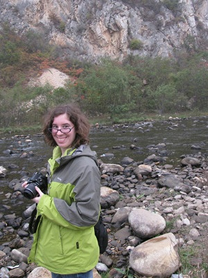

Amanda Falk
Ph.D., The University of Kansas, 2014
Education
B.S. Biology, Lake Superior State University, 2007
M.S. Geology, University of Kansas, 2009
Advisors
Dr. Stephen Hasiotis
Dissertation Title
Foot and Hindlimb Morphology, Soft Tissues, and Tracemaking Behaviors of Early Cretaceous Birds from China and the Republic of Korea with a Comparison to Modern Avian Morphology and Behavior
Thesis Title
Interpreting Behavior from Early Cretaceous Bird Tracks and the Morphology of Bird Feet and Trackways
Research
I am interested in the tracks and traces of birds, both fossil and modern, as well as the general gross morphology and functional morphology of both fossil and ancient birds. I am also interested the evolution of avian migration, avian osteology, and the origin and evolution of birds. I also have minor interests in paleoecology and vertebrate anatomy (mainly in the functional morphology of animals other than birds). My current research focuses on analyzing the behaviors of Early Cretaceous bird tracks from the Haman Formation of South Korea, re-describing and interpreting bird tracks from several areas in China, as well as performing a series of morphologic measurements on the feet of fossil and modern birds to try and reconstruct soft tissue structures on the feet of Early Cretaceous fossil birds. I am also studying the behaviors and parameters under which modern bird tracks are produced.
Publications
Hasiotis, S.T., Jones, M.F., Falk, A., and Platt, B.F., 2015. Actualistic study of vertebrate ichnology—understanding the behavior that produces trackways, swim trails, and feeding patterns of vertebrates. GSA National Meeting, Baltimore, MD, November 1-4, 1 p.
Connolly, A.M., Golab, J.A., Wolfe, B.A., Wildermuth, S., Jackson, A., Hammersburg, S.R., Jones, M., Goers, A., Fischer, S., Radar, R., Huber, M., Hogue, J., Moelling, L., Gabay, T., Dorward, B., Falk, A.R., Dzenowski, N., Raisanen, D., and Hasiotis, S.T., 2014, A new Ichnology Website at the University of Kansas (http://ichnology.ku.edu): A guide to identify trace fossils, interpret organism behaviors, and reconstruct paleoenvironments and paleoecosystems, and understand the stratigraphic record of behavior. North American Paleontological Conference, Gainesville, FL, February 14-18, v.13, p. 95.
Falk, A.R., Lim, J-D, and Hasiotis, S.T., 2014. A Behavioral Analysis of Fossil Bird Tracks from the Haman Formation (Republic of Korea) Shows a Nearly Modern Avian Ecosystem. Vertebrata PalAsiatica, v. 52(1), p. 129–152.
Connolly, A.M., Golab, J.A., Wolfe, B.A., Wildermuth, S., Hammersburg, S.R., Dzenowski, N., Schmerge, J., Falk, A.R., and Hasiotis, S.T., 2013, From Abelichnus to Zoophycos: An online catalogue of ichnotaxa. Geological Society of America National Meeting, Denver, CO, October 27-30, v. 45(7), p. 325.
Falk, A.R., and Hasiotis, S.T., 2013, A new experimental setup for testing the effect of media consistency on avian track morphology and linking traces produced to behavior. Geological Society of America National Meeting, Denver, CO, October 27-30, v. 45(7), p. 899.
Falk, A.R., Lim, J.-D., Martin, L.D., and Hasiotis, S.T., 2013, Following in the footsteps of dinosaurs: ancient avian feeding behaviour from the Haman Formation of South Korea. European Association of Vertebrate Paleontology Meeting, Normandy, France, June 9-12, 1 p.
Falk, A., Martin, L.D., and Hasiotis, S. T., 2011. A morphologic criterion for distinguishing bird tracks. Journal of Ornithology, v. 152, p. 701–716. DOI 10.1007/s10336-011-0645-x.
Falk, A. R. Tracking Mesozoic birds around the world. 2011. Journal of Systematic Palaeontology, v. 9(1) p. 85-90.
Alexander, D. E., Gong, E., Martin, L. D., Burnham, D. A., Falk, A. R., 2010. Model tests of gliding with different hindwing configurations in the four-winged dromaeosaurid Microraptor gui. PNAS, v. 107(7), p. 2972–2976.
Gong, E., Martin, L. D., Burnham, D. A., Falk, A. R., 2010. The birdlike raptor Sinornithosaurus was venomous. PNAS, v. 107(2), p. 766–768 (Cover paper).
Falk, A. R., Hasiotis, S. T. and Martin, L.D., 2010. Feeding traces associated with bird tracks from the Lower Cretaceous Haman Formation, Republic of Korea. Palaois, v. 25, p. 730–741.
Falk, A.R., and Hasiotis, S.T., 2010. First report of specific bird feeding traces–probe and peck marks–from the Lower Cretaceous Haman Formation, South Korea. Geological Society of America National Meeting, Abstracts with Programs, p. 1.